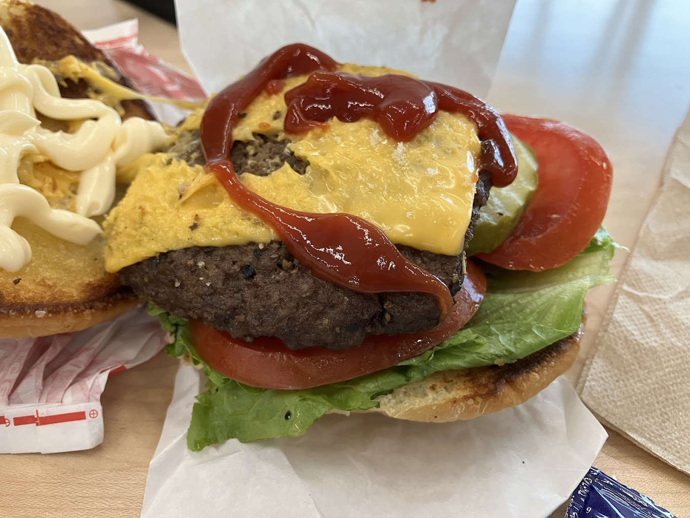

Bub's Burgers
Famous for the Big Ugly Burger. Show up starving — you’ll need the room.
Famous for the Big Ugly Burger. Show up starving — you’ll need the room.
Craft burgers, local brews, and laid-back upscale diner vibes right downtown.
Old-school, no-frills spot slinging Indy’s most iconic smashed burgers.